Functions
The problem with repeating code
You can already store and organise data with variables, input and output, operators, conditions, loops, lists, tuples and dictionaries. But there is another problem: what happens when the same piece of logic is needed again and again?
Say you are building a student result program and want to show a welcome banner:
print("================================")
print(" Welcome to Student System")
print("================================")If the program needs this banner in 10 places, you write those three lines 10 times. The same happens with any block, for example:
print("Hello, Rahul")
print("Welcome to Python")
print("Good morning")
# other code
print("Hello, Rahul")
print("Welcome to Python")
print("Good morning")Now imagine the program becomes very large. We may have the same logic again and again:
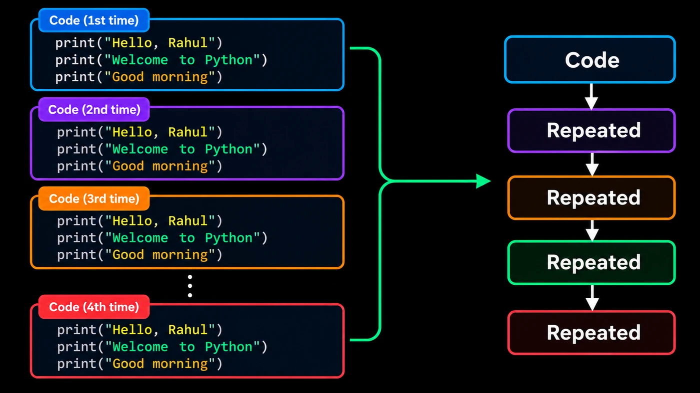
This causes several problems:
Problem 1 · More code
The same lines appear again and again, so the program grows for no reason.
Problem 2 · Hard to maintain
Want to change the message? You must find and edit every copy.
Problem 3 · More mistakes
Miss one copy, or edit one slightly differently, and the program behaves inconsistently.
Imagine a restaurant. It has a common process for preparing a particular dish. Instead of teaching the chef the entire process every time a customer orders it, the restaurant has a defined procedure:
The recipe is created once but can be used many times. A Python function works in a similar way.
This named, reusable block of code is called a function.
Defining a function with def
def function_name():
# code to runFor our welcome message:
def greet():
print("Hello, welcome to the course.")Let’s split the first line into its parts:
def is short for define. It tells Python: “I am not asking you to run anything now. I am teaching you a new recipe to use later.”
greet is the name we chose. Same rules as a variable name: no spaces, descriptive, lowercase with underscores by convention (show_welcome, calculate_average).
( the opening parenthesis: where inputs (parameters) will go later.
) closes it. Empty parentheses mean the function takes no input yet.
: the colon, just like in if condition: or for item in sequence:, says an indented block follows.
The indented lines below the header are the function’s body: the instructions that run, but only once the function is called.
def, remembers the recipe under the name greet, and moves on. Nobody asked for a dosa yet.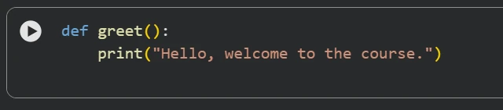
Tracing through it:
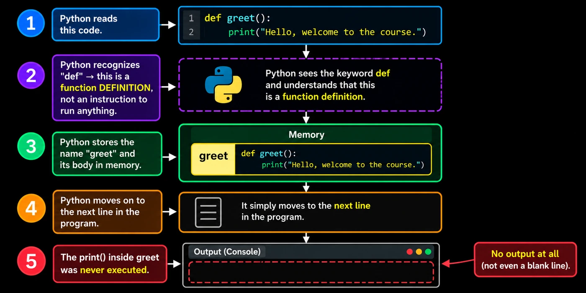
Calling a function
To run the code inside a function, you call it: write its name followed by parentheses ().
function_name()def greet():
print("Hello, welcome to the course.")
greet()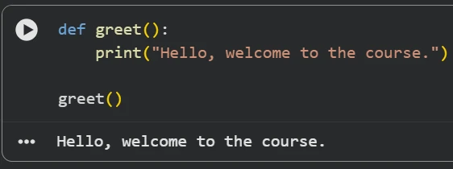
greet() runs the body.Tracing through it:
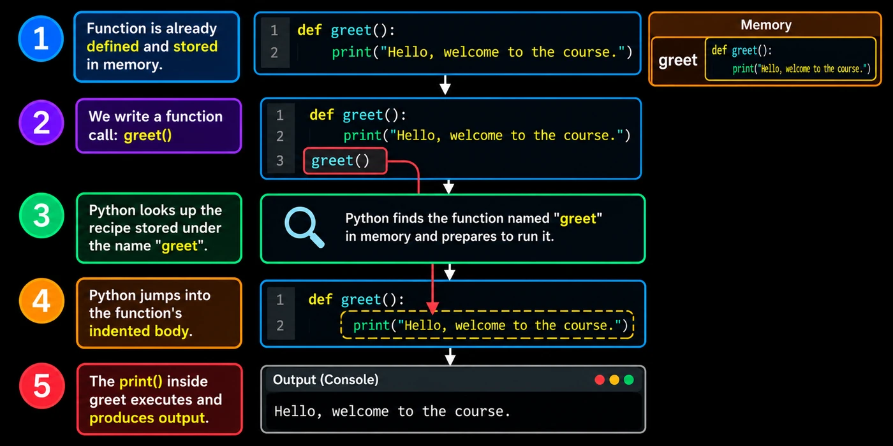
Calling the same function many times
The real benefit shows when you call it more than once. The same block runs again without retyping it:
def greet():
print("Hello, welcome to the course.")
greet()
greet()
greet()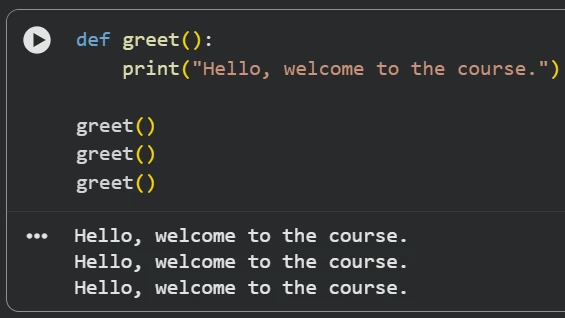
The def block was written only once, but its body ran three separate times, once for each call.
A common mistake: forgetting the parentheses
def greet():
print("Hello, welcome to the course.")
greet # no output!() is the “go” button. Without it, Python treats greet as a reference to the function object. In a script that line silently does nothing; in the interactive shell, or with print(greet), you would see something like <function greet at 0x...> instead of your message.Function execution flow
Let’s trace exactly what order things happen in when a call sits between other code:
def greet():
print("Hello, welcome to the course.")
print("Before calling the function")
greet()
print("After calling the function")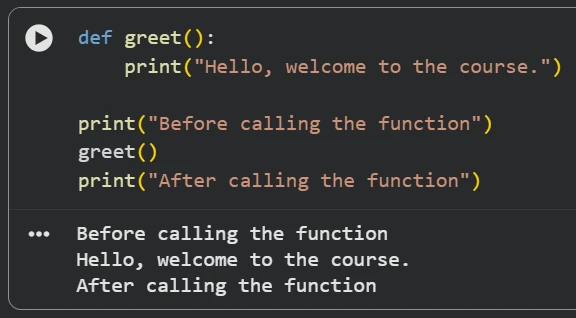
Tracing through it, step by step:
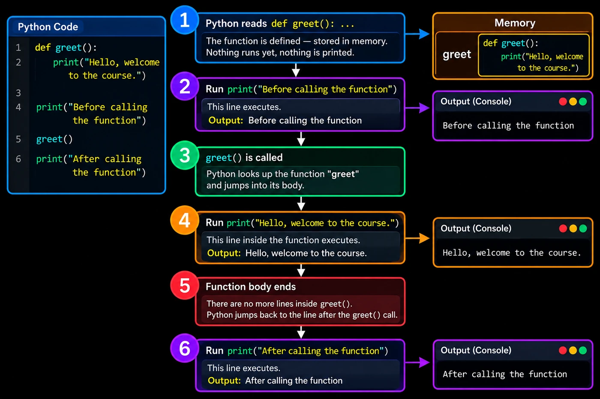
- 1Read the
defPython stores the function under the namegreet. Nothing prints. → recipe saved - 2First print“Before calling the function” appears.
- 3The call
greet()Python jumps into the function body and prints “Hello, welcome to the course.” - 4Back to the callerWhen the body ends, Python returns to the line after the call and prints “After calling the function”.
Parameters and arguments
Our greet() always prints the exact same message. What if we want to greet Rahul, then Priya, then Amit, each by name? Right now the function has no way to receive any input.
We need a way to send information into a function when we call it. That is what parameters give us.
The words parameter and argument are often used interchangeably, but they refer to two different things, at two different moments.
def greet(name): # name is a PARAMETER
print("Hello,", name)
greet("Rahul") # "Rahul" is an ARGUMENT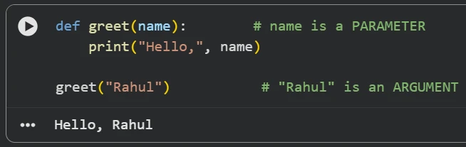
Parameter
The variable name listed inside the parentheses of the def line. A placeholder waiting for a value.
Argument
The actual value you pass inside the parentheses when you call the function.
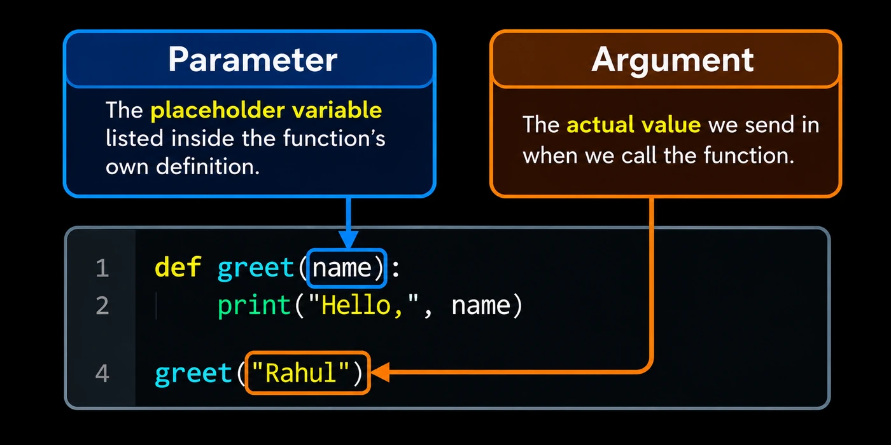
Passing values to functions
When you call greet("Rahul"), Python assigns the argument to the parameter, exactly like name = "Rahul", for the duration of that call. Now the same function serves every student without touching its definition:
def greet(name):
print("Hello,", name, "! Welcome to the course.")
greet("Rahul")Now reuse it for different students:
greet("Rahul")
greet("Priya")
greet("Amit")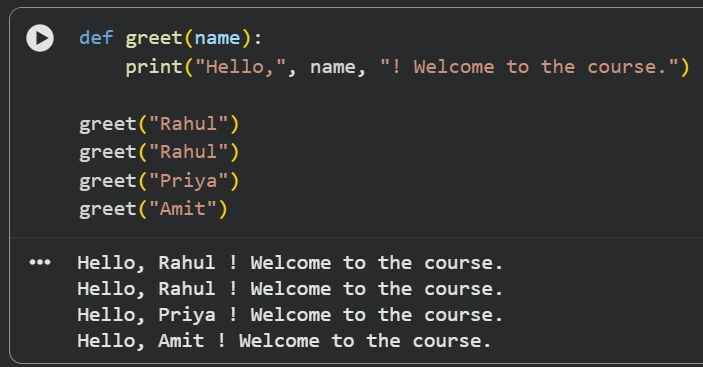
print() puts a space between each comma-separated item. For tight punctuation use an f-string: print(f"Hello, {name}! Welcome to the course.").Multiple parameters
A function can take several parameters, separated by commas. Problem: greet a student and mention their course.
def greet(name, course):
print("Hello,", name, "! Welcome to", course)
greet("Rahul", "Python")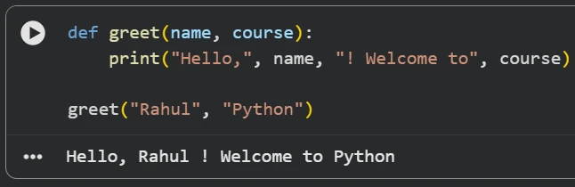
Visually:
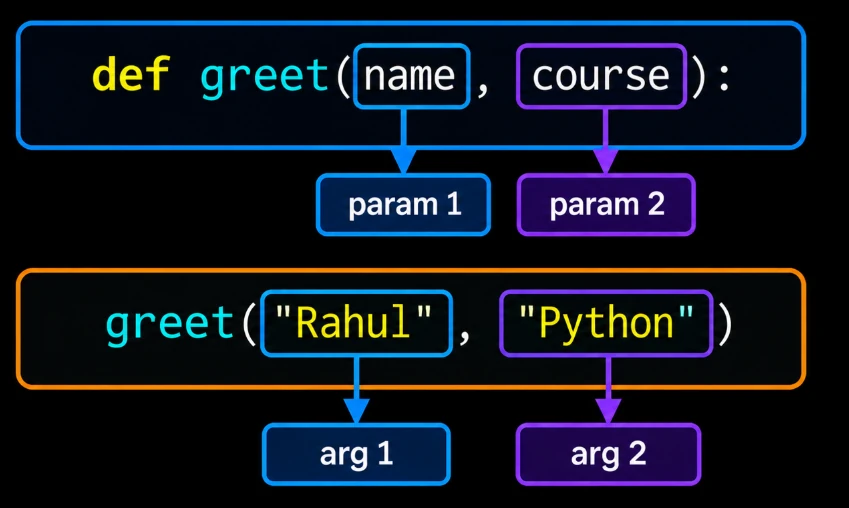
Each parameter receives its own corresponding argument, and both are available anywhere inside the function’s body.
Positional arguments: order matters
In greet("Rahul", "Python"), Python matches arguments to parameters by position: first argument to first parameter, second to second. These are positional arguments, the default way of matching.
def greet(name, course):
print("Hello,", name, "! Welcome to", course)
greet("Rahul", "Python")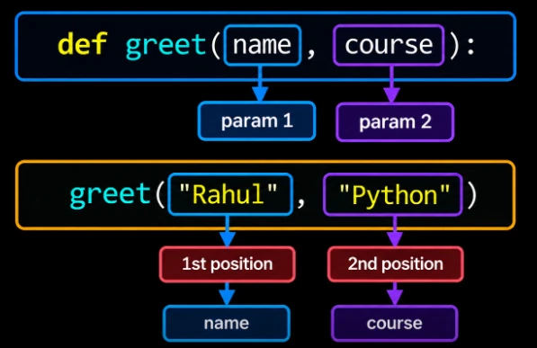
Order of positional arguments
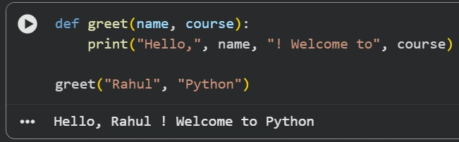
Because only the position counts, swapping the order silently swaps the values, even though the call looks fine:
def introduce(name, age):
print(name, "is", age, "years old")
introduce("Rahul", 21) # correct order
introduce(21, "Rahul") # WRONG order - values get swappedRahul is 21 years old
21 is Rahul years oldReturn values
So far our functions have used print() to show something on screen:
def add(a, b):
print(a + b)
add(5, 3)8It looks like it works, but there is a hidden limit. What if you want to use that sum afterwards?
result = add(5, 3)
print(result + 10)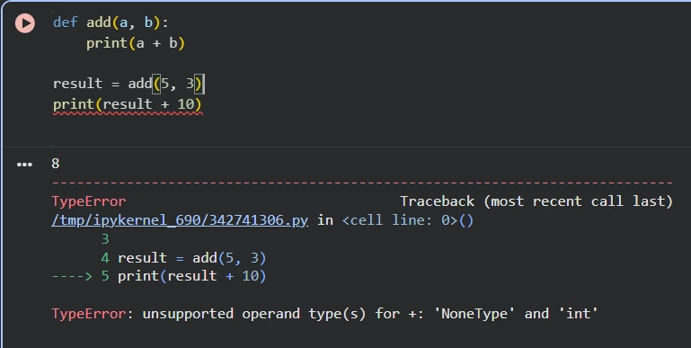
result + 10 fails because result is None.add() printed 8 on the screen but never handed the value back. A function without return gives back None, so result is None, and None + 10 crashes.
The return statement
return sends a value back to wherever the function was called from.
def add(a, b):
return a + b
result = add(5, 3)
print(result)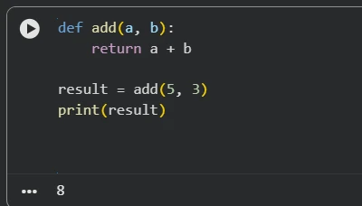
result really holds 8, so result + 10 would give 18.return hands one result back out.return exits immediately. The moment Python runs a return, the function stops. Nothing after it, inside that function, runs.def add(a, b):
return a + b
print("This will never run")
add(5, 3)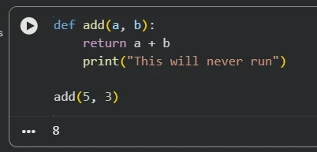
print() after return never runs.The print() line is never reached, because return already exited the function on the line before it.
Returning a single value
The simplest use of return sends back exactly one value:
def square(x):
return x ** 2
print(square(5))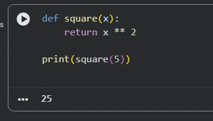
The expression after return is evaluated first; its result (25), not the expression x ** 2, is what goes back.
Returning multiple values
Separate several values with commas and Python packs them into a tuple, the same tuple packing you saw with tuples.
def get_min_max(numbers):
return min(numbers), max(numbers)
result = get_min_max([4, 9, 2, 7])
print(result)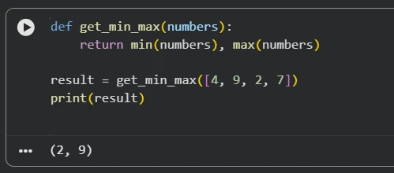
Since it’s just a tuple, you can unpack it into separate variables, exactly as in the Tuples section:
smallest, largest = get_min_max([4, 9, 2, 7])
print(smallest)
print(largest)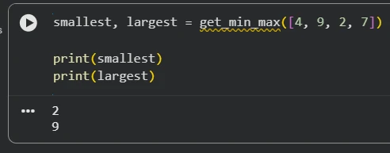
Using returned values in expressions
A returned value can be used directly, inline, in a condition or calculation:
def calculate_total(price, quantity):
return price * quantity
if calculate_total(150, 3) > 400:
print("This qualifies for free delivery")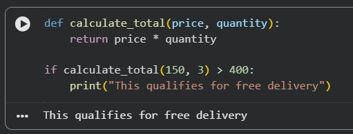
You can even feed one function’s result straight into another:
def square(x):
return x ** 2
def add(a, b):
return a + b
result = add(square(2), square(3))
print(result)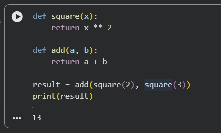
This chaining only works because these functions return their results instead of printing them.
Types of functions
Built-in functions
A built-in function is one Python already provides. You have been calling these from day one without writing any def.
print(len([1, 2, 3]))
print(int("21"))
print(list(range(5)))3
21
[0, 1, 2, 3, 4]| Built-in | What it does |
|---|---|
print() | displays output |
len() | counts items |
int() | converts to an integer |
range() | generates a sequence of numbers (wrap it in list() to see them all) |
User-defined functions
A user-defined function is one you write with def to solve a problem specific to your program:
def get_pi():
return 3.14159
value = get_pi()
print(value)3.14159The four shapes of a user-defined function
Two independent questions decide a function’s shape: Does it take input (arguments)? and Does it send back a result (a return value)? Yes/no on each gives four patterns.
1 · No arguments, no return
Just does something.
def greet():
print("Hello, welcome!")
greet()2 · Arguments, no return
Uses input, but hands nothing back.
def greet(name):
print("Hello,", name)
greet("Rahul")
greet("Priya")3 · No arguments, a return
Computes and sends back a value.
def get_pi():
return 3.14159
value = get_pi()
print(value)4 · Arguments and a return
The most powerful and common shape.
def add(a, b):
return a + b
result = add(5, 3)
print(result)Default and keyword arguments
With greet(name, course), every call must supply both arguments, even when nearly everyone takes the same course:
greet("Rahul", "Python")
greet("Priya", "Python")
greet("Amit", "Python")The function works perfectly, but look carefully at our function calls: the student’s name changes, but the course is always "Python". We keep writing the same value. Imagine we have 100 students:
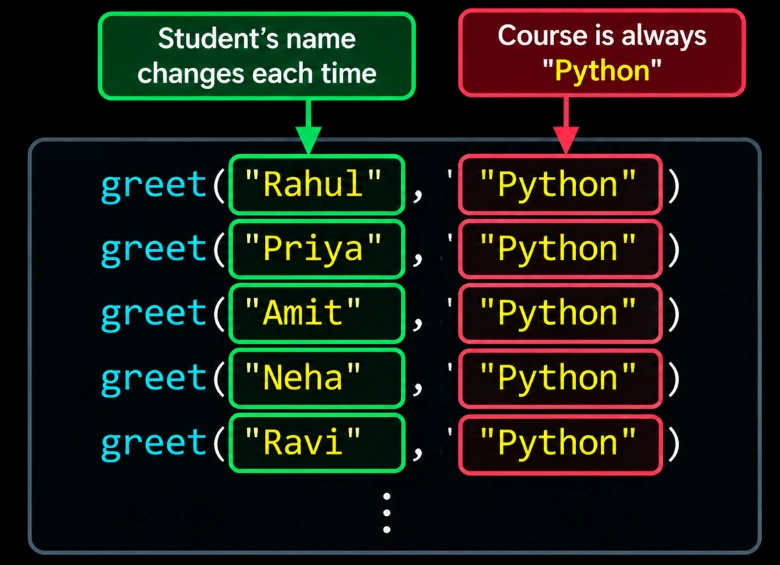
"Python" 100 times.What if we could tell Python: “Use Python automatically unless I give another course”? That is what default parameters do.
Default parameters
Assign a default value to a parameter in the definition using =. If the caller leaves that argument out, the default is used.
def function_name(parameter=default_value):
# codedef greet(name, course="Python"):
print("Hello,", name, "! Welcome to", course)Using default arguments
Now we can call greet() in two different ways:
greet("Priya") # without the optional argument: the default kicks in
greet("Rahul", "Java") # with it: our value overrides the default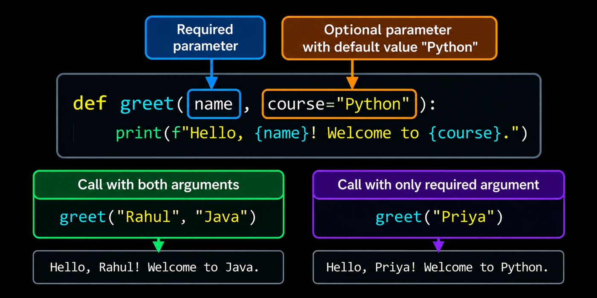
course out and “Python” is used. (The diagram prints with an f-string, so there is no space before “!”.)greet("Rahul"), Python couldn’t tell whether “Rahul” fills course or name.# WRONG - default parameter before a normal parameter
def greet(course="Python", name):
print("Hello,", name, "! Welcome to", course)
greet("Priya")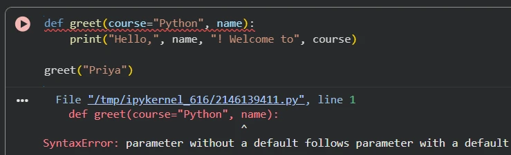
Keyword arguments
Instead of matching by position, you can pass arguments by name, saying exactly which parameter each value belongs to. Then the order no longer matters.
def greet(name, course):
print("Hello,", name, "! Welcome to", course)
greet(name="Rahul", course="Python")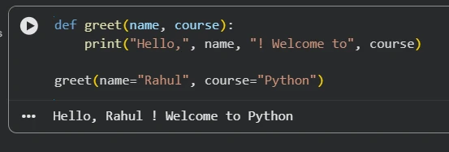
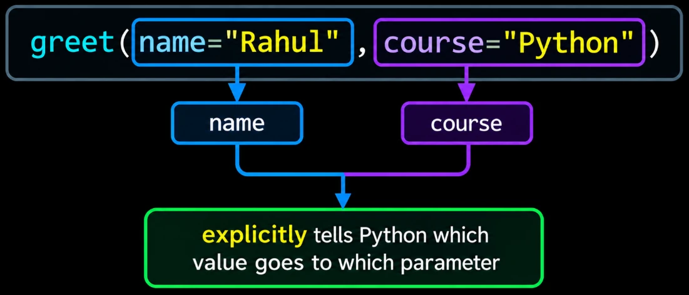
So the order can even be swapped: greet(course="Java", name="Priya") prints Hello, Priya ! Welcome to Java.
These are called keyword arguments because each value is paired with the parameter’s name.
*args and **kwargs (basics)
Every function so far has a fixed number of parameters. But what if you don’t know how many values someone will pass? Problem: add up any number of values, sometimes 2, sometimes 5, sometimes 10.
def add(a, b):
return a + b
print(add(2, 3))
print(add(2, 3, 4)) # ERROR - too many arguments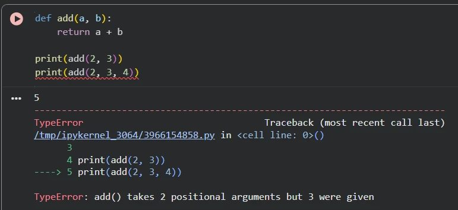
TypeError.We would need add_two(), add_three(), add_four()… That is exactly the repetition functions were meant to remove. Python offers two tools:
*args
Any number of positional arguments, collected into a tuple.
**kwargs
Any number of keyword arguments, collected into a dictionary.
*args for many positional arguments
def add(*args):
print(args)
add(2, 3)
add(2, 3, 4, 5)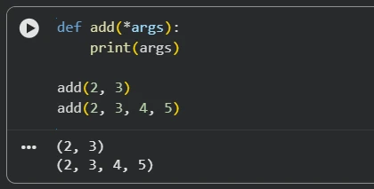
The name args is only a convention; the * is what matters. *values or *numbers would work too, but *args is the standard everyone recognises. Now we can finish add() with a loop:
def add(*args):
total = 0
for num in args:
total = total + num
return total
print(add(2, 3))
print(add(2, 3, 4, 5))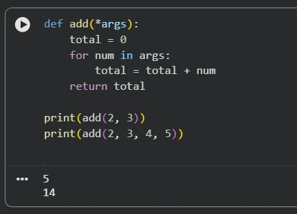
One function now works for 2, 4 or 20 values, because args is simply a longer or shorter tuple each time.
**kwargs for many keyword arguments
def show_details(**kwargs):
print(kwargs)
show_details(name="Rahul", age=21)
show_details(name="Priya", age=22, course="Python")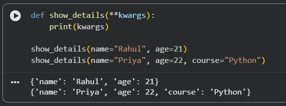
kwargs is short for keyword arguments; again, it is just a convention, and the double ** is what actually matters.
Accessing values from args and kwargs
Since args is a plain tuple, you can index it or loop through it exactly as in the Tuples section:
def add(*args):
print("First value:", args[0])
for num in args:
print(num)
add(10, 20, 30)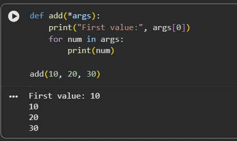
args[0] is the first value; a loop visits them all.Since kwargs is a plain dictionary, you can use .items(), .keys() or .values() exactly as in the Dictionaries section:
def show_details(**kwargs):
for key, value in kwargs.items():
print(key, ":", value)
show_details(name="Rahul", age=21, course="Python")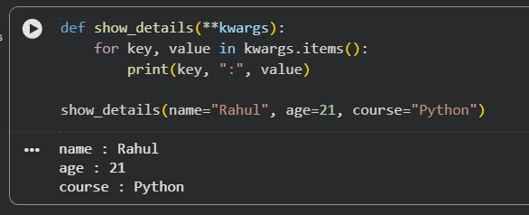
.items() gives each key with its value.Combining regular parameters, *args and **kwargs
All three can appear together, but the order is fixed: regular parameters, then *args, then **kwargs.
def student_report(name, *args, **kwargs):
print("Name:", name)
print("Marks:", args)
print("Other details:", kwargs)
student_report("Rahul", 85, 90, 78, city="Bhubaneswar", course="Python")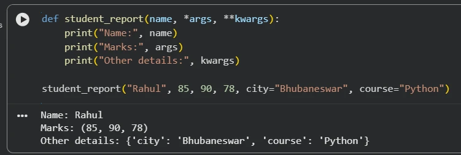
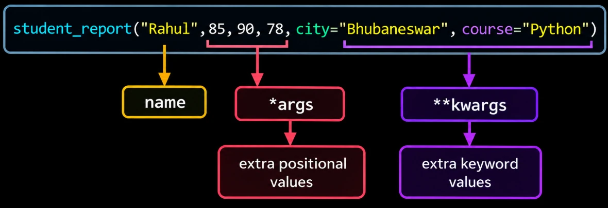
**kwargs constantly in SDKs and API clients, e.g. a wrapper that forwards extra options like timeout=30 or temperature=0.2 to the library underneath without listing every option itself.Variable scope
def calculate_total():
total = 100
print(total)
calculate_total()
print(total)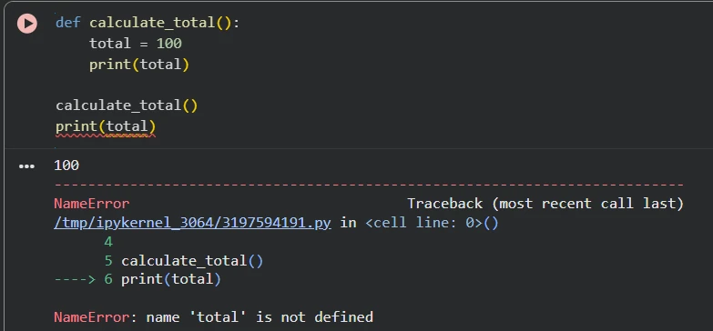
NameError.Inside the function, total prints fine. Outside, Python has no idea what total is. This isn’t a bug; it is a deliberate rule called variable scope: where a variable is created decides where it can be used. Understanding it explains behaviour that otherwise looks like Python “forgetting” a variable that was clearly defined.
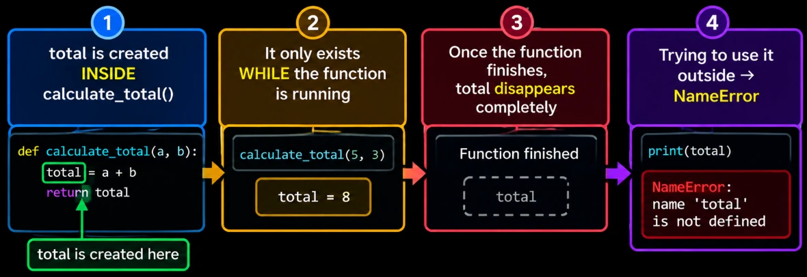
Local variables
A variable created inside a function is a local variable. It belongs only to that function and exists only while the function runs.
def calculate_total():
total = 100 # local variable
print(total)
calculate_total()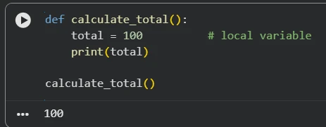
Each call gets a fresh local variable; calls don’t share or remember values:
def add_one():
count = 0
count = count + 1
print(count)
add_one()
add_one()
add_one()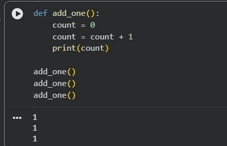
count restarts at 0 on every call.count starts at 0 on every call. It never “remembers” the previous call, because a brand-new local count is created each time and the old one is gone.
Global variables
A variable created outside any function, at the top level of the program, is a global variable. It lives as long as the program runs and can be read from anywhere, including inside functions.
college_name = "ABC Institute" # global variable
def show_college():
print("Welcome to", college_name)
show_college()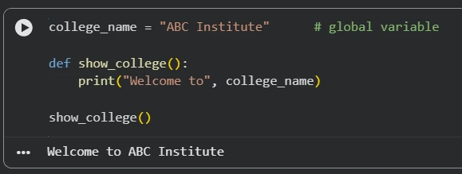
The global keyword
Reading a global is fine. Changing one directly from inside a function fails:
count = 0
def increment():
count = count + 1 # ERROR
print(count)
increment()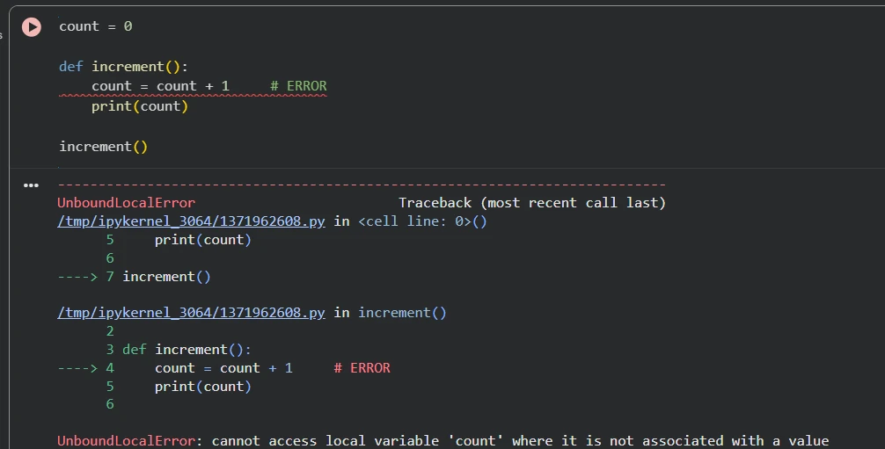
count local, so reading it first fails.The moment Python sees count = ... inside a function, it decides count is a new local variable for the whole function. Then count + 1 fails, because that local has no value yet. To say “I mean the global one”, use global:
count = 0
def increment():
global count
count = count + 1
print(count)
increment()
increment()
increment()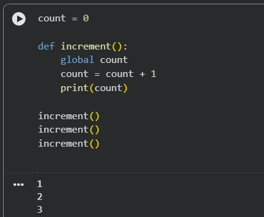
global, the same variable keeps counting.global sparingly. Functions that quietly change globals are hard to test and debug. Prefer passing values in as arguments and returning the new value.Lambda functions
Suppose you need a tiny function that squares a number, just once:
def square(x):
return x ** 2
print(square(5))It works, but a full named def for one small calculation can feel like more structure than the work itself.
For these small, single-expression cases Python offers the lambda function: a function with no name, written in one line.
lambda arguments: expressionan ordinary variable that happens to hold a function
the keyword that creates an anonymous function
the parameter(s)
separates parameters from the body
one expression, whose result is returned automatically
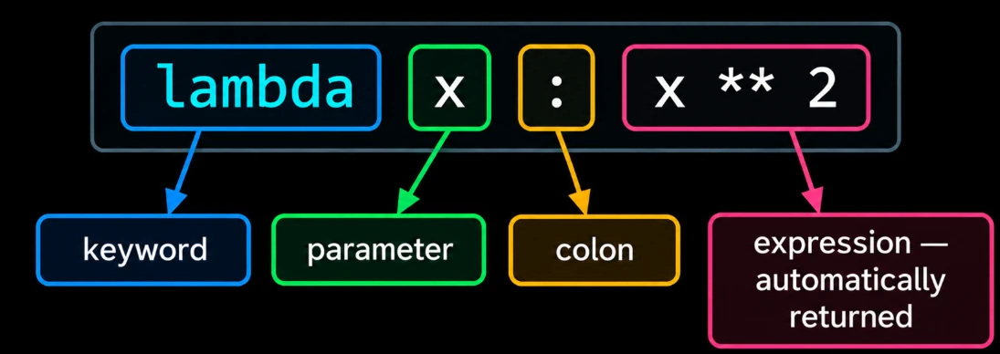
square = lambda x: x ** 2
print(square(5))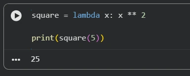
def version.square is just a normal variable that happens to hold a lambda function, rather than a number or a string. Calling square(5) works exactly like calling a function made with def.
Multiple parameters
add = lambda a, b: a + b
print(add(5, 3))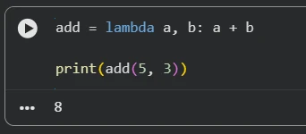
Returning an expression (no return keyword)
A lambda never uses return. It holds a single expression, and that expression’s value is sent back automatically.
multiply = lambda a, b: a * b
print(multiply(4, 5))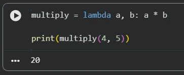
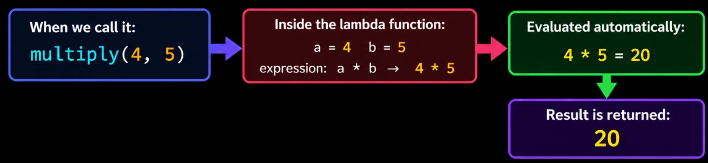
return needed: the expression’s value is the result.Important restriction: because a lambda is limited to one expression, it cannot contain multiple statements, loops, or normal if/else blocks. It can use a one-line conditional expression:
check_pass = lambda marks: "PASS" if marks >= 50 else "FAIL"
print(check_pass(65))
print(check_pass(30))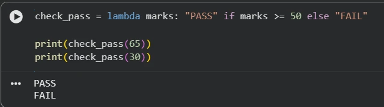
Normal function vs lambda function
def square_normal(x):
return x ** 2
square_lambda = lambda x: x ** 2
print(square_normal(4))
print(square_lambda(4))16
16| Normal function | Lambda function | |
|---|---|---|
| Name | Usually has a name | No name in the lambda expression itself |
| Body | Multiple statements and lines | One expression |
| Return | Uses return to send back a result | The expression’s result is returned automatically |
| Best for | Larger, reusable or complex logic | Small, simple logic, often needed only temporarily |
sorted(students, key=lambda s: s["marks"]).Real-world practice
Each of these mirrors a check you would find in a real product. Read the problem, try writing it yourself, then compare.
1 · Bank loan eligibility
Accept monthly income, credit score and existing loan. Return "Eligible" if income is at least ₹50,000, credit score at least 700 and existing loan below ₹5,00,000; otherwise "Not Eligible".
def check_loan_eligibility(income, credit_score, existing_loan):
if income >= 50000 and credit_score >= 700 and existing_loan < 500000:
return "Eligible"
return "Not Eligible"
result = check_loan_eligibility(75000, 760, 200000)
print("Loan Status:", result)Loan Status: Eligible2 · E-commerce discount
Return the final amount after a 20% discount for purchases of ₹5,000 or more, or 10% for ₹2,000 or more.
def calculate_discount(amount):
if amount >= 5000:
discount = 20
elif amount >= 2000:
discount = 10
else:
discount = 0
return amount - (amount * discount / 100)
final_amount = calculate_discount(6500)
print("Final amount:", final_amount)Final amount: 5200.03 · Ride fare with a night charge
Base fare ₹50 plus ₹15 per km; add ₹30 at night. Note the default argument.
def calculate_fare(distance, is_night=False):
fare = 50 + (distance * 15)
if is_night:
fare += 30
return fare
day_fare = calculate_fare(10)
night_fare = calculate_fare(10, is_night=True)
print("Day fare:", day_fare)
print("Night fare:", night_fare)Day fare: 200
Night fare: 2304 · Insurance premium
Customers above 50 pay 20% extra on the basic premium.
def calculate_premium(basic_premium, age):
if age > 50:
return basic_premium * 1.20
return basic_premium
premium = calculate_premium(25000, 55)
print("Annual premium:", premium)Annual premium: 30000.05 · Internet data usage
Return the remaining data, or "Limit exceeded".
def check_data_usage(limit, used):
if used <= limit:
return limit - used
return "Limit exceeded"
remaining = check_data_usage(100, 85)
print("Remaining data:", remaining, "GB")Remaining data: 15 GBcheck_data_usage(100, 120) the print above would show “Remaining data: Limit exceeded GB”. Real code usually returns one type and signals problems another way (you’ll meet exceptions in Error Handling).6 · Courier status message
def get_delivery_message(status):
if status == "Shipped":
return "Your package has been shipped."
elif status == "In Transit":
return "Your package is on the way."
elif status == "Delivered":
return "Your package has been delivered."
else:
return "Unknown Status"
message = get_delivery_message("In Transit")
print(message)Your package is on the way.Key terms
- Function
- A named, reusable block of code that runs only when it is called.
- def
- The Python keyword that defines a new function; defining it does not run it.
- Function call
- Running a function by writing its name followed by parentheses, e.g.
greet(). - Parameter
- A variable name listed in a function’s definition that receives a value when the function is called.
- Argument
- The actual value passed to a function at the call, e.g.
"Rahul"ingreet("Rahul"). - Positional argument
- An argument matched to a parameter by its position in the call: first to first, second to second.
- Keyword argument
- An argument passed with the parameter’s name, e.g.
course="Java", so its order in the call doesn’t matter. - Default parameter
- A parameter given a value in the definition (
course="Python") that is used when the caller leaves it out. Must come after non-default parameters. - return
- A statement that ends the function immediately and sends a value back to the caller. Without it, a function returns
None. - *args
- A parameter that collects any number of extra positional arguments into a tuple.
- **kwargs
- A parameter that collects any number of keyword arguments into a dictionary.
- Local variable
- A variable created inside a function; it exists only during that call and can’t be used outside it.
- Global variable
- A variable created at the top level of a program; it can be read anywhere, and changed inside a function only with the
globalkeyword. - Lambda function
- A small anonymous function written in one line as
lambda arguments: expression, whose expression value is returned automatically.
Self-check
Pick an answer. You’ll see right away whether it’s correct and why.
A file contains only def greet(): print("Hi"). What does running it print?
- Hi
- An error
- Nothing
<function greet>
Defining a function only stores it. The body runs only when you call greet().
In def greet(name): … greet("Priya"), what is "Priya"?
- An argument
- A parameter
- A return value
- A keyword
Parameters are named in the definition (name); arguments are the values supplied at the call.
def add(a, b): print(a + b), then x = add(2, 3). What is x?
- 5
- "5"
- (2, 3)
- None
The function prints 5 but never returns anything, so the call evaluates to None.
What does def f(): return 1, 2 give back?
- Only 1
- The tuple
(1, 2) - The list
[1, 2] - A SyntaxError
Comma-separated return values are packed into a tuple, which you can unpack: a, b = f().
Which definition is valid?
def f(a=1, b):def f(**kw, *args):def f(a, b=1):def f(a=1, b, c=2):
Parameters with defaults must come after those without, and the order is regular, *args, then **kwargs.
Inside def show(*args, **kwargs), the call show(1, 2, x=3) gives…
args = (1, 2),kwargs = {'x': 3}args = [1, 2],kwargs = [3]args = (1, 2, 3),kwargs = {}- A TypeError
Positional extras go into the args tuple; named extras go into the kwargs dictionary.
You call add_one() three times. Inside, it sets count = 0, adds 1 and prints count. What prints?
- 1 2 3
- 1 1 1
- 0 1 2
- An error
count is local, so each call creates a fresh one starting at 0.
Why does count = count + 1 inside a function fail when count is a global?
- Globals can never be read inside functions
- Integers can’t be changed
- The function needs
return - Assigning makes
countlocal to the whole function, and that local has no value yet
Assignment inside a function creates a local name. Add global count if you really mean the global.
Which is a valid lambda?
lambda x: return x * 2lambda x: for i in x: print(i)lambda m: "PASS" if m >= 50 else "FAIL"lambda (x): { x * 2 }
A lambda holds one expression (a one-line conditional expression is fine) and never uses return.
All of it, in one sentence
A function is a named recipe you define once with def and call with () as often as you like: parameters receive the arguments you pass (by position, by keyword, with defaults, or in bulk via *args/**kwargs), return hands a result back, scope keeps a function’s variables to itself, and a lambda is the one-line shortcut.
— Vishwa Mohan